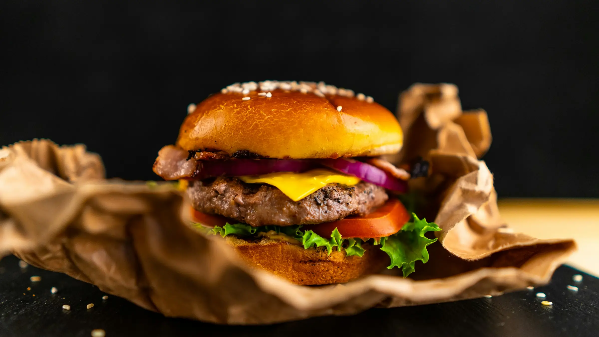

Solomillo de Ternera al Vino Tinto
El corte más selecto, cocinado a la perfección con una reducción de vino tinto y especias.
El lugar donde la cocina local se encuentra con la pasión. Descubre nuestros platos hechos con ingredientes frescos y de temporada.
Ver Menú Principal 
El corte más selecto, cocinado a la perfección con una reducción de vino tinto y especias.

Pasta hecha a mano diariamente, acompañada de nuestra salsa ragú tradicional a fuego lento.
Una tapa clásica: calamares pequeños rebozados y fritos, servidos con limón fresco.
Trabajamos directamente con agricultores locales para asegurar la máxima frescura y apoyar a nuestra comunidad. Proporcionamos detalles, explicaciones y contexto.
Nuestros platos se basan en recetas transmitidas por generaciones, manteniendo la esencia de la cocina de nuestra abuela. Proporcionamos detalles, explicaciones y contexto.
Disfruta de tu comida en un entorno cálido y familiar, ideal para cualquier celebración o una cena tranquila. Proporcionamos detalles, explicaciones y contexto.
¡Una experiencia gastronómica increíble!

Laura M.
El ambiente es perfecto y el trato del personal inmejorable. Probamos el solomillo y la tarta de queso, ¡ambos sublimes! Definitivamente volveremos para seguir probando el resto del menú. Recomiendo encarecidamente este lugar a cualquiera que busque cocina auténtica y de calidad. Sin duda, es el mejor restaurante de la zona.
La mejor pasta fresca que he probado
Javier R.
La pasta fresca casera con ragú es un espectáculo. Se nota que cada ingrediente ha sido seleccionado con sumo cuidado. Tienen un servicio rápido y muy atento. Me encantó que también ofrezcan productos frescos para llevar a casa. Volveré pronto a por más limones y naranjas!
Un servicio fantástico y platos deliciosos
María P.
¡Súper recomendado! El personal es muy amable y los platos son de diez.